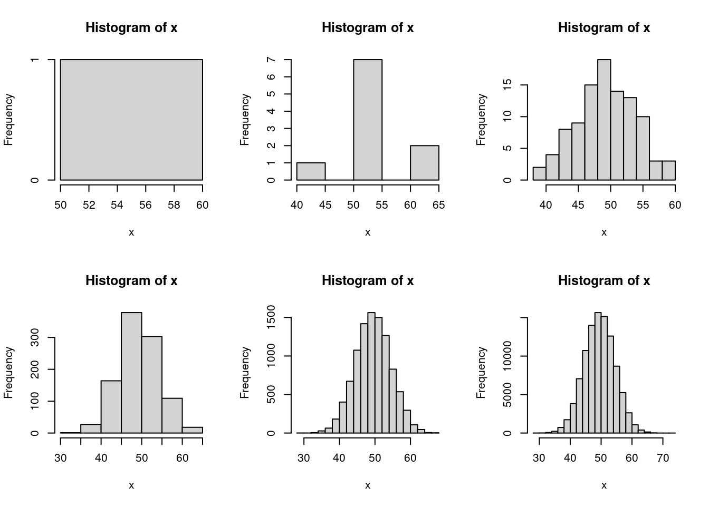

Introduction to git and knitr
In this section we will learn and dicuss some tools that you will need to complete your first problem set, namely git and knitr (either Quarto, R Markdown, or Rtex). At the end there are also resources about code style and a couple notes to keep in mind when turning in your problem sets.
Getting started with Git and GitHub
Learning Objectives
- Create a remote repository on GitHub
- Create a local Git repository on your machine
- Practice adding, and committing changes to your (local) Git repo
- Practice pushing commited changes to a remote repo
Useful Links
A nice tutorial is available on the Berkeley SCF github repo
Using Git without having to enter your password over and over:
Option 1: Use Git Credential Manager and HTTPS clone method, e.g.,
git clone https://github.com/berkeley-scf/tutorial-git-basics.gitOption 2: Use SSH keys and SSH clone method, e.g.,
git clone git@github.com:berkeley-scf/tutorial-git-basics.gitEither way, be sure to follow the instructions for your OS (Mac, Windows, or Linux) by selecting it at the top of the page.
git-scm.com has a number useful resources for learning Git, including:
Create a New GitHub Repository
There are two ways to start a repository:
- Creating the repository on GitHub using your browser and then use
git clone. - Using
git initon your machine and then link it to a remote server, e.g. GitHub.
Option 1 is usually the right choice
Use option 2. only if you already have a local repo and later decide you want to create a remote copy on a service such as GitHub. For this course, this won’t be necessary.
But if you do need to use git init, then when you first create a local repo on your machine using git init, the default branch name is master. However, the default branch when you create one on GitHub is called main, so if you later decide to add a remote copy of your local repo to GitHub, you will need to update the name of your default branch. After creating the blank repo on GitHub (no README.md or .gitignore), run the commands that GitHub provides in your local repo to change the default branch from master to main.
Today, we’re going to cover option 1. by creating one online using Berkeley’s GitHub Enterprise instance:
- Open your browser and Sign in to your github.berkeley.edu account.
- Locate the
+button (next to your avatar). - Select the
New repositoryoption. - Choose a name for your repository: e.g.
demo-repo. - In the Description field add a brief description: e.g. “this is a demo repo”
- Check “Add .gitignore” and type “R” to find one that is tailored to R projects. This stops items like
.Rhistoryfiles from being added to your repo. - Click the green button Create repository.
Adding a README file
Initially, your repo is located on GitHub. To set it up locally, you must clone the repository from GitHub, e.g.:
# replace `https://github.com/berkeley-scf/tutorial-git-basics` with
# the URL / clone method (HTTPS or SSH) for your new repo
git clone https://github.com/berkeley-scf/tutorial-git-basicsIt is customary to add a README.md file at the top level (note that a blank one was already added to your PS repo). This file must contain (at least) a description of what the repository is about. The following command will create a README.md file with some minimalist content:
echo "# Demo Repo" >> README.mdNow you have a “new” file in your local repo, but this change has not been recorded by Git. You can confirm this by checking the status of the repo:
git statusNotice that Git knows that README.md is untracked, so let’s add the changes to Git’s database:
git add README.mdCheck the status of the repo again:
git statusNow Git is tracking the file README.md. Next, the changes need to committed to the repository. You can use the -m option to write a message inline. It’s a good idea to keep your commit messages succinct but informative.
git commit -m "Add README"In general, it is best to make frequent small commits rather than infrequent large commits. For example, you might want to make a single commit for each problem in a problem set, rather than a single commit for the full problem set.
Warning
If you run git commit without -m, Git will launch a default text editor, usually vi or vim. If you this happens unintentionally, you can quit by typing ESC followed by : and then q! followed by Enter.
You can specify which editor Git should use using git config. Take a look at this documentation to learn how.
Examining changes while editing
Once you create a commit, it becomes a part of your repo’s history. You can see the history using git log:
# this usually opens in `less`
# type `Q` to quit and return to the bash shell
git logLet’s make a change to README.md, which is now tracked by Git.
echo "Nothing to see here." >> README.mdgit status will show that README.md was modified, along with other useful information. But it won’t actually show the differences between your repo’s history and the current un-committed state. To see this, there is another extremely useful command:
# this also typically opens in `less`
git diff
# you can also check a specific file or directory
git diff README.mdPushing changes to a remote repo
Now that you have linked your local repo with your remote repo, you can start pushing (i.e., uploading) commits to GitHub. As part of the basic workflow with Git and GitHub, you want to frequently check the status of your repo:
git statusNow let’s push your recent commit to the remote branch (origin) from the local branch (main):
git push origin mainGo to your Github repository and refresh the browser. If everything went fine, you should be able to see the contents of your customized README.md file.
If you or a collaborator make changes on your remote repo you must pull the remote repo into your local repo before you attempt to push the changes you made locally.
git pullIn summary, if you want to use git add files to a GitHub repo, the steps are:
Step 0: Pull the repo (This is necessary if your local repo is “out of date’’, meaning there are changes on the remote repo that are not present in your local repo. This is not necessary if your local repo contains the most recently made changes.)
Step 1: Make edits to/create new files in your local repo. Check on status and _diff_erences frequently.
Step 2: Add the files you edited/created.
Step 3: Commit your update with a helpful message.
Step 4: Push the update to the main branch.
Practice exercises
Practice exercise 0: Configure git and clone the course website repo
Use
git configto configure your identity, like the following example:git config --global user.name "Oski Bear" git config --global user.email oski@berkeley.eduFor more info on configuring Git, see here.
If you haven’t already, clone the GitHub repo for the course website:
# HTTPS git clone https://github.com/berkeley-stat243/stat243-fall-2022.git # SSH git clone git@github.com:berkeley-stat243/stat243-fall-2022.gitYou can find the source for this lab in
labs/01/intro_git_knitr.Rmd
Practice exercise 1: Add a
.gitignore to your PS submission repo.
Now that you know how to clone a repo, add files, commit, and push to GitHub, try the following on your laptop:
Clone your PS submission repo.
Copy the R-tailored
.gitignorefile from the demo repo you created above to the root directory of your local copy of the repo.cdto your local repo and usegit statusto confirm that.gitignoreis untracked, then add it and commit with an informative message.Visit GitHub’s gitignore repo, go to the “Global” subdirectory, and find the
.gitignoretemplate for your operating system (e.g.,macOS.gitignore).Add the contents of the OS-specific
.gitignoretemplate to the end of your PS submission repo’s.gitignoreand save the file.Use a git command to check the changes you made.
Add the changes, commit with an informative message, and push them to the remote repo.
Practice exercise 2: Clone your PS submission repo on the SCF.
In general, you can feel free to work with your repo on your laptop. But in case you need the code on the SCF, you can try the following steps:
sshto one of the SCF machines.(Optional) Find / create an SSH key and add it to your account at github.berkeley.edu.
Clone your PS submission repo somewhere in your SCF home directory.
On your laptop, make some minor change to the
README.md. For example, you can add a description line like “STAT 243 PS submission repo.”Add, commit, and push the change.
Back on the SCF,
cdinto your repo and rungit pullto update that copy of your repo with the changes you just made on your laptop!
knitr and R Markdown Files
Learning Objectives:
- Differentiate between
.Rand.Rmdfiles - Understand dynamic documents
- Gain familiarity with R Markdown
.Rmdfiles - Gain familiarity with code chunks
Useful Links
- SCF tutorial on dynamic documents
- knitr in a knutshell tutorial with information about R Markdown and knitr with LaTeX.
- R Markdown cheatsheet
- Complete R Markdown guide
- R Sweave tutorial
Opening and knitting an Rmd file
In the menu bar of RStudio, click on File, then New File, and choose R Markdown. Select the default option (Document), and click OK. RStudio will open a new .Rmd file in the source pane. And you should be able to see a file with some default content.
Locate the button Knit, the one with an icon of a ball of yarn and two needles. Click the button (knit to HTML) so you can see how Rmd files are rendered and displayed as HTML documents. Alternatively, you can use a keyboard shortcut: in Mac Command+Shift+K, in Windows and Linux Ctrl+Shift+K
What is an Rmd file?
Rmd files are a special type of file, referred to as a dynamic document. This is the fancy term we use to describe a document that allows us to combine narrative (text) with R code in one single file.
Rmd files are plain text files. This means that you can open an Rmd file with any text editor (not just RStudio) to see and edit its contents.
The main idea behind dynamic documents is simple yet very powerful: instead of working with two separate files, one that contains the R code, and another one that contains the narrative, you use an .Rmd file to include both the commands and the narrative.
One of the main advantages of this paradigm is that you avoid having to copy results from your computations and paste them into a report file. In fact, there are more complex ways to work with dynamic documents and source files. But the core idea is the same: combine narrative and code in a way that lets the computer do the manual, repetitive, and time consuming job.
Rmd is just one type of dynamic document that you will find in RStudio. In fact, RStudio provides other file formats that can be used as dynamic documents: e.g., .Rnw (R Sweave), .Rhtml (R HTML), and .qmd (Quarto).
Anatomy of an Rmd file
The structure of an .Rmd file can be divided in two parts: 1) a YAML header (also called YAML metadata), and 2) the body of the document. In addition to this structure, you should know that .Rmd files typically use three types of syntaxes: YAML, Markdown, and R.
The YAML header consists of the first few lines at the top of the file. This header is established by a set of three dashes --- as delimiters (one starting set, and one ending set). This part of the file requires you to use YAML syntax (Yet Another Markup Language.) Within the delimiter sets of dashes, you specify settings (or metadata) that will apply to the entire document. Some of the common options are things like:
titleauthordateoutput
The body of the document is everything below the YAML header. It consists of a mix of narrative and R code. All the text that is narrative is written in a markup syntax called Markdown (although you can also use LaTeX math notation). In turn, all the text that is code is written in R syntax inside blocks of code (see below).
How does an Rmd file work?
Rmd files are plain text files. All that matters is the syntax of its content. The content is basically divided in the header, and the body.
- The header uses YAML syntax.
- The narrative in the body uses Markdown syntax.
- The code and commands use R syntax.
The process to generate a nice rendered document from an Rmd file is known as knitting. When you knit an Rmd file, various R packages and programs run behind the scenes. But the process can be broken down in three main phases: 1) Parsing, 2) Execution, and 3) Rendering.
Parsing refers to examining line by line to identified components as yaml header, or as markdown text, or as R code.
Each component receives a special treatment and formatting.
The most interesting part is in the pieces of text that are R code. Those are separated and executed if necessary. The commands may be included in the final document. Also, the output may be included in the final document. Sometimes, nothing is executed nor included.
Depending on the specified output format (e.g. HTML, pdf, word), all the components are assembled, and one single document is generated.
Yet Another Syntax to Learn
R markdown (Rmd) files use markdown as the main syntax to write content.Markdown is a very lightweight type of markup language, and it is relatively easy to learn.
One of the most common sources of confusion when learning about R and Rmd files has to do with the hash symbol #. As you know, # is the character used by R to indicate comments. The issue is that the # character has a different meaning in markdown syntax. Hashes in markdown are used to define levels of headings.
In an Rmd file, a hash # that is inside a code chunk will be treated as an R comment. A hash outside a code chunk, will be treated as markdown syntax, making its associated text a given type of heading.
Blocks of code: Code chunks vs. inline code
There are two types of blocks of code:
- code chunks
- inline code.
Inline code
Inline code is code inserted within a line of narrative text between backticks (`). For example, here’s a small bit of raw Markdown:
**Important**: Edit your `README.md`.And here’s what that looks like when rendered:
Important: Edit your README.md.
Oftentimes, inline code blocks are simply a way to improve the formatting of our document and aren’t used for computation, but they can run R code using the following syntax:
I like to eat `r pi`.Result: I like to eat 3.1415927.
This is helpful when you’re describing results and don’t want to hard-code a number or the amount of repititions you ran. Instead, you can use variables from previous code chunks in the document.
Code chunks
These are the most important blocks of code because they typically include the R computations that will run when you knit the document.
Code chunks are lines of text (typically in the syntax of a specific programming language such as R) separated from any lines of narrative (in Markdown syntax) by the special Markdown syntax ``` (three backticks). For example:
```{r my-chunk, echo = FALSE}
par(mfrow = c(2, 3))
for (n in 10^seq(0, 5)) {
x <- rbinom(n, 100, 0.5)
hist(x)
}
par(mfrow = c(1, 1))
```The opening backticks are followed by curly braces, the language (r for R), an optional (but highly recommended) name for the chunk (my-chunk here), and then comma-separated chunk options (see below).
Note the final three backticks at the bottom of the chunk – these close the chunk and allow you to return to the narrative in Markdown. By adding the above example to an .Rmd, you would see the following output:
The details aren’t super important, but for those that are curious here is what happens when we run Knit:
knitrevaluates the chunks that start with ```{r}and inserts the results into a intermediary markdown file.- It then calls Pandoc which converts the intermediary markdown to the next format (possibly the output), repeating until the output format specified in the YAML header is reached.
- For example, for PDF output, the sequence is:
.Rmd->.md->.tex->.pdf
Code chunk options
There are dozens of options available to control the executation of the code, the formatting and display of both the commands and the output, the display of images, graphs, and tables, and other fancy things. Here’s a list of the basic options you should become familiar with:
cache: whether to store the results from excecuted code, so that it does not need to be run on subsequent knits.TRUEFALSE
eval: whether the code should be evaluatedTRUEFALSE
echo: whether the code should be displayedTRUEFALSE- numbers indicating lines in a chunk
error: whether to stop execution if there is an errorTRUEFALSE
results: how to display the outputmarkupasisholdhide
comment: character used to indicate output lines- the default is a double hash
## ""empty character (to have a cleaner display)
- the default is a double hash
LaTeX
Rmarkdown files render LaTeX through an external generator. This means that you can write any math equations or LaTeX syntax within a specific chunk, and install the required LaTeX libraries outside of R, and it will be rendered properly.
Inline code chunks are setoff with single dollar signs, ie $\beta$ is rendered as \(\beta\). This is great for small equations, Greek letters, and references to variables.
LaTeX chunks can also be significantly more complicated. Independent chunks are setoff with double dollar signs, ie $$ Complex LaTeX Thing $$, such as the following equation: \[
D(\theta_l,T_x) = \left\{
\begin{array}{ll}
\theta_{l[0]}^{'}=\theta_l & \quad i = 0 \\
\theta_{l[i+1]}^{'} = \theta_{l[i]}^{'} *F(\overline{L_{[t-i-T_x]}}) & \quad i \leq T_l
\end{array}
\right.
\]
R Sweave
An alternative to R Markdown is R Sweave. R Sweave knits R code together in the form of a LaTeX document. There is an example R Sweave document example_sweave.Rnw included in this folder. This can serve as a template for you if you choose to use this format for your problem sets.
The options for code chunks listed in the Rmd section above are the same as the options used in Rnw code chunks. As you can see in the example_sweave.Rnw document the syntax to designate code chunks is different. In Sweave documents you will use <<>>= to start the chunk and @ to end the chunk.
To compile the PDF click the Compile PDF button.
Updating Preferences to knit using knitr
Sweave is older way to knit together code and text, while knitr is more updated and allows for better formatting. By default R Studio sets R Sweave documents to be run using Sweave to switch to knitr open the RStudio menu in the menu bar, and choose Preferences. In Preferences go to the Sweave tab and change the PDF generation to Weave Rnw files using knitr.
Opening an R Sweave
In the menu bar of RStudio, click on File, then New File, and choose R Sweave. Select the default option (Document), and click Ok. RStudio will open a new .Rnw file in the source pane. And you should be able to see a file with some default content.
If you opened an Rnw file before changing the from Sweave to knitr, the default content will contain \SweaveOpts{concordance=TRUE} you will need to remove this line of code if you have changed the preferences to generate the PDF using knitr.
Rtex
The final option is to use the Rtex file format. This file format again uses knitr to combine code chunks with text in the form of a LaTeX document.
For instructions of how to use this see the dynamic documents tutorial. The integration with RStudio is not great, so there is no automated way to open a .Rtex file from RStudio’s menu. Also you will need to use the command line to compile.
Code style
Useful Links
Additional notes on style
You don’t need to follow the exact style of any of those - use your own judgment and figure out what style you like and be consistent in using that style. But you should do the following:
- use white space to make it easier to read your code
- have your code lines be no more than 80 characters
- give your objects and functions meaningful (and not overly long) names
- comment your code
- indent your code as needed so one can see what lines of code go together in a block
You should NOT include periods in names of objects (this contradicts Google’s style guide). The reason is that periods are used to mean something specific in R’s S3 object oriented programming syntax (e.g., predict.lm) and that periods are used in other languages specifically for object-oriented syntax. So I’d suggest either calculate_mle or calculateMLE, not calculate.mle.
Acknowledgements
This lab was originally authored by Jared Bennett and updated incrementally by Zoe Vernon, Andrew Vaughn, and James Duncan.